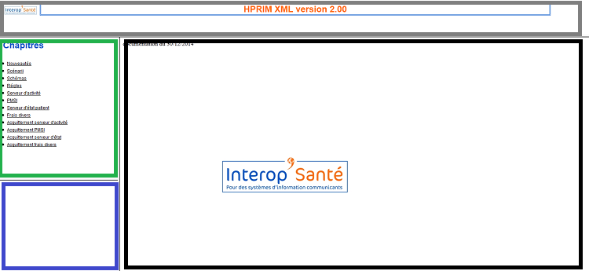
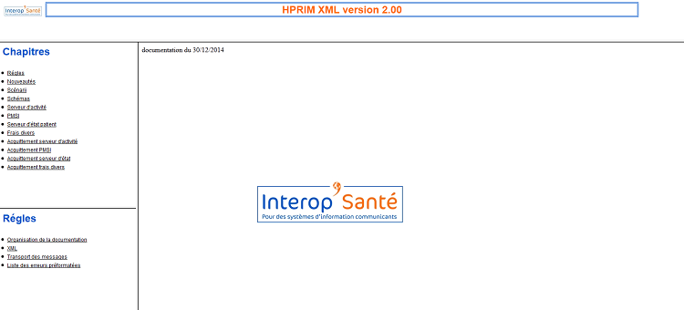
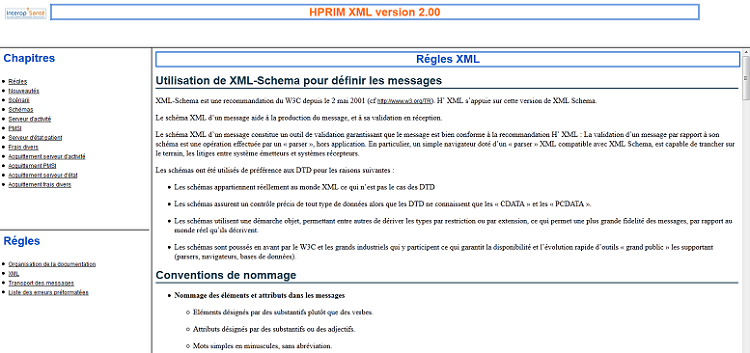
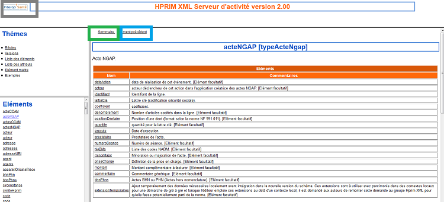

Organisation de la documentation
Présentation générale
La documentation des schémas se présente toujours de la même façon, à savoir en 4 frames :
- Frame d'entête, représentée par le cadre gris. Elle permet d'identifier le chapitre abordé et sa version.
- Frame de chapitres ou thèmes = cadre vert. Elle permet de sélectionner une orientation proposée. Sa déclinaison s'affichera dans la frame 'détail'.
- Frame de détail = cadre bleu. Lorsque vous choisissez un détail précis, les informations se présenteront dans la frame 'corps'.
- Frame de corps = cadre noir.

L'exemple ci dessous illustre le cheminement de la présentation. Tout d'abord, nous choisissons de regarder le thème 'Régles'.

Puis, nous souhaitons voir le contenu 'XML'.

Documentation d'un schéma
Chaque schéma a toujours comme thèmes :
- Régles. Elles définissent les points importants à respecter lors de l'implémentation du schéma.
- Versions. Ce lien fournit la documentation des éléments mis à jour pour chaque version de diffusion de schéma.
- Liste des éléments. Elle permet d'avoir par ordre alphabétique l'ensemble des balises du schéma. Si vous selectionnez un élément, la documentation associée s'affiche dans la frame 'corps'.
- Liste des attributs. Elle donne l'ensemble des attributs présents dans le schéma par ordre alphabétique.
- Elément maitre. Ce lien permet de balayer la documentation du schéma par ordre arborescent.
- Exemples. Ensemble de fichiers xml.
Remarque :
Tout texte souligné indique la possibilité de selectionner cette valeur et d'avoir la documentation associée.
Déplacement dans une documentation de balise
A tout instant, vous pouvez revenir au menu principal en cliquant sur le lien 'menu' positionné dans le cadre gris (sur le logo Interop Santé) de l'exemple ci dessous.
Le lien 'sommaire' (cadre vert) permet de revenir au départ de la documentation du schéma.
Il est aussi possible de revenir à l'élément précédent, sans passer par la liste, en selectionnant le lien 'élément précédent' ou 'attribut précédent' (cadre bleu).
